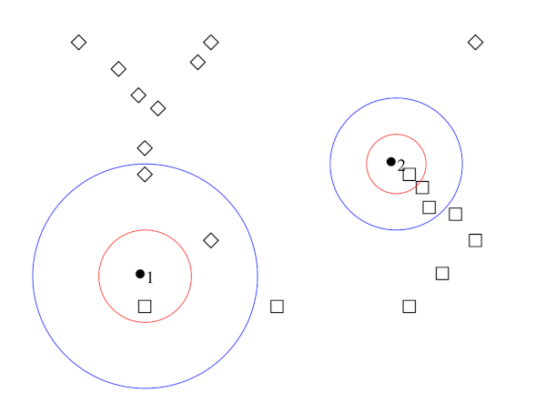
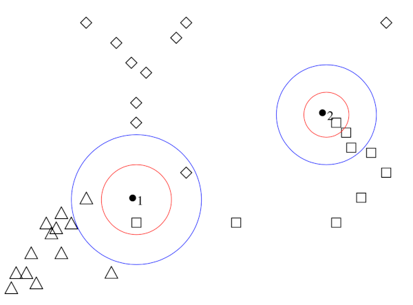
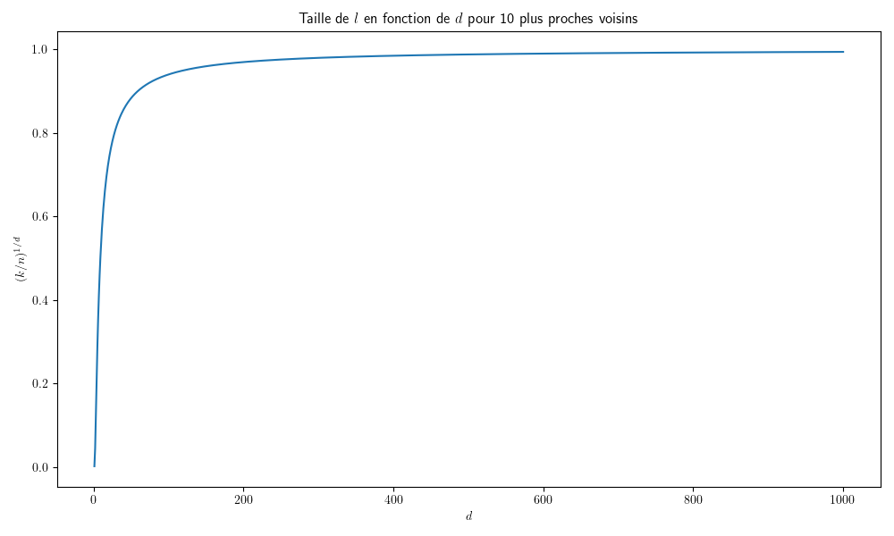

K plus proches voisins
Contents
Soit un ensemble d’exemples \(Z=\left \{(\mathbf x_i,y_i),1\leq i\leq n,\ \mathbf x_i\in X,y_i\in [\![1,C]\!] \right \}\), les \(\mathbf x_i\) étant des échantillons d’une certaine distribution \(P\). On s’intéressera dans la suite, pour illustration, au cas dans le cas où \(X=\mathbb{R}^d\).
Etant donnée une métrique \(\delta\) sur \(X\), la méthode des \(k\) plus proches voisins (k-PPV ou K-NN) détermine pour \(\mathbf x\in X\) les \(k\) points \(\mathbf x_1\cdots \mathbf x_k\) de \(Z\) les plus proches de \(\mathbf x\) au sens de \(\delta\). La règle de décision consiste à affecter \(\mathbf x\) à la classe majoritairement représentée dans les appartenances des \(\mathbf x_i\).
K plus proches voisins#
Notons tout d’abord que dans le cas où \(k = 1\), on a la règle de classification du plus proche voisin. Elle assigne à \(\mathbf x\) simplement la même étiquette que le point d’apprentissage le plus proche. Dans ce cas, les frontières de décision dans l’espace \(X\) prennent la forme d’un pavage convexe (Fig. 12). Cette règle extrêmement simple possède un comportement asymptotique excellent vis-à-vis du risque minimal de Bayes.
Principe#
La règle de décision par \(k\)-ppv est facile à illustrer (Fig. 10).

Fig. 10 Décision par 1-ppv (rouge) et 3-ppv (bleu) dans un ensemble d’exemples appartenant à deux classes.#
Les points à classer sont \(\bullet_1\) et \(\bullet_2\) . Les données d’apprentissage appartiennent à l’une des deux classes \(\Box\) ou \(\Diamond\). On cherche, au sens de la métrique choisie pour le problème (ici, euclidienne), les \(k\)-plus proches voisins des points \(\bullet\).
pour \(k = 1\), dans les deux cas, c’est un \(\Box\). On affecte donc aux deux points \({\bullet}\) la classe \(\Box\).
pour \(k = 3\), le voisinage de \({\bullet_1}\) compte deux \(\Diamond\) et un \(\Box\) : c’est la classe \(\Diamond\) qui est majoritaire, et ce point est classé comme \(\Diamond\). Pour l’autre point, la d’ecision pour \(k=3\) confirme l’appartenence à la classe \(\Box\).
La Fig. 11 représente la même opération pour un problème à trois classes :
pour \(k=1\), les points \(\bullet\) sont classés comme \(\Box\)
pour \(k=3\), la règle de d’ecision produit une ambiguïté pour \(\bullet_1\) : on ne peut pas se décider entre les trois classes.

Fig. 11 Décision par 1-ppv (rouge) et 3-ppv (bleu) dans un ensemble d’exemples appartenant à trois classes.#
La méthode des \(k\)-plus proches voisins est proposée dans l”Algorithm 1.
Algorithm 1 (Algorithme des k plus proches voisins.)
Entrée : \(\mthbf x,k\), une métrique \(\delta\)
Sortie : La classe de \(\mathbf x\)
Pour tout \((\mathbf x_i ,y_i)\in Z\)
Calculer la distance \(\delta(\mathbf x,\mathbf x_i)\)
Dans les \(k\) points les plus proches de \(\mathbf x\)
compter le nombre d’occurrences de chaque classe
Attribuer à \(\mathbf x\) la classe qui apparaît le plus souvent
Validité bayésienne#
La validité de cette simple règle est conforme aux règles de l’estimation bayésienne, sous l’hypothèse que les
probabilités a priori des classes sont bien estimées par leur proportion d’échantillons d’apprentissage.
La règle des \(k\)-ppv fait implicitement une estimation comparative de toutes les densités de probabilités des classes apparaissant dans le voisinage de \(\mathbf x\) et choisit simplement la plus probable : elle approxime donc la décision bayésienne.
En effet, si on suppose que les \(n\) points de \(Z\) comportent \(n_i\) points de la classe \(\omega_i\) et que, sur les \(k\)-plus proches voisins de \(\mathbf x\), il y a \(k_{n_i}\) points de cette classe, alors l’estimation de la probabilité \(P(x|\omega_i)\) est donnée par
où \(V_n\) est le volume de la région considérée. On fait l’hypothèse que \(n_i/n\) est un estimateur de \(P(\omega_i)\), la probabilité a priori de la classe de rang \(i\). On a alors : \(n_i/n = \widehat{P_n}(\omega_i)\).
et donc :
Ainsi, la classe qui a le plus de points d’apprentissage dans les \(k_n\) (celle pour laquelle la valeur \(k_{n_i}\) est maximale) est aussi celle qui maximise la valeur \(P_n({\mathbf x} \mid \omega_i) \, \widehat{P_n}(\omega_i)\) qui est égale, par la règle de Bayes, à \(\widehat{P_n}(\omega_i \mid \mathbf x) \, P(\mathbf x)\). Cette classe est donc celle qui maximise la valeur \(\widehat{P_n}(\omega_i \mid \mathbf x)\). Son choix approxime par conséquent la règle de classification bayésienne.
Ceci ne vaut que si \(n_i/n\) est un estimateur de \(P(\omega_i)\). Il faut donc n’appliquer la règle des \(k\)-ppv qu’après s’être assuré de la validité de cette hypothèse.
Convergence#
Il est assez facile de démontrer que la probabilit’e d’erreur \(R_{k-ppv}\) de la règle des \(k\)-ppv converge vers le risque bayésien \(R_B\) quand \(n\) croît vers l’infini et ceci pour tout \(k\). On démontre dans la suite cette propriété pour \(k=1\).
Démonstration de la convergence#
On note \(S=\{{\mathbf x}_1, {\mathbf x}_2,..., {\mathbf x}_m\}\) les vecteurs de \(X\) dans l’ensemble d’apprentissage \(Z\), \(\mathbf x\) le point dont on cherche la classe par la règle du 1-ppv et \(\mathbf x_0\) le point de \(X\) le plus proche de \(\mathbf x\).
Notons \(B(\mathbf x, \rho)\) la sphère de rayon \(\rho\) centrée en \(\mathbf x\). La probabilité qu’un point de \({S}\) se trouve dans \(B(\mathbf x, \rho)\) vaut
La probabilité qu’aucun point de l’ensemble d’apprentissage \({ S}\) ne se trouve dans \(B( \mathbf x, \rho)\) est égale à \((1-P(\rho))^n\) qui tend vers zéro quand \(n\) augmente. Par conséquent, \( \mathbf x_0\) tend en probabilité vers \( \mathbf x\), ce qui assure la convergence désirée.
Majoration de l’erreur#
L’erreur moyenne réalisée par la règle du 1-ppv peut se calculer en remarquant qu’en attribuant à \( \mathbf x\) la classe de \( \mathbf x_0\), on commet l’erreur :
Quand \(n\) augmente \( \mathbf x_0\) tend en probabilité vers \( \mathbf x\), ce qui implique que \(P(\omega_i \mid \mathbf x_0)\) tend vers \(P(\omega_i \mid \mathbf x)\). Ainsi
Prenons le cas à deux classes (\(C=2\)). Soit \(\omega_1( \mathbf x)\) la classe que donnerait la décision bayésienne et \(\omega_2( \mathbf x)\) l’autre. L’erreur bayésienne vaut :
L’erreur par la décision du 1-ppv vaut pour \(C=2\) :
et donc
D’où la formule dans le cas de deux classes :
Autres propriétés de convergence#
On a de plus les propriétés suivantes, dans le cas de deux classes, toujours à la limite sur \(n\) (en pratique, pour \(n\) « assez grand ») :
avec \( R_{k-ppv} \leq R_B + R_{1-ppv}\sqrt{\frac{2}{\pi k}}\).
ce que l’on pourrait résumer par : « la moitié de l’information sur la classification optimale d’un point inconnu est disponible dans son seul plus proche voisin ».
Plus généralement, pour un nombre quelconque \(C\) de classes :
Ces formules valident donc l’intuition que l’augmentation de \(k\) améliore l’estimation réalisée ; en même temps, elles prouvent que la règle simple du plus proche voisin (\(1\)-ppv) est asymptotiquement efficace.
Considérations pratiques#
Quelle valeur pour \(k\)?#
Il faut trouver un compromis dans l’intervalle \([\![ 1,n ]\!] \) entre une valeur faible de \(k\), qui semble moins favorable selon les formules précédentes, et une valeur trop grande (prendre \(k = n\) mène au résultat suivant : un point sera toujours classé comme appartenant à la classe la plus nombreuse dans l’ensemble d’apprentissage). Diverses considérations théoriques et expérimentales mènent à choisir \(k\) autour de \(\sqrt {n/C}\) où \(n/C\) est le nombre moyen de points d’apprentissage par classe. La dimension de \(X\) n’apparaît pas dans cette heuristique.
Quelle décision prendre en cas d’égalité ?#
On peut augmenter \(k\) de \(1\) pour trancher, mais l’ambiguïté peut subsister si le nombre de classes est supérieur à 2. On peut également tirer au hasard la classe à attribuer au point ambigu , l’analyse de cette heuristique démontrant qu’elle donne de bons résultats.
Plusieurs variantes de la règle du \(k\)-ppv ont été par ailleurs proposées pour aborder ce problème. Par exemple, au lieu de compter simplement les points de chaque classe parmi les \(k\) (ce que l’on peut traduire par les faire voter avec une voix chacun), on peut pondérer ces votes par la distance au point \(\mathbf x\), qui est de toute façon calculée. On est dans ce cas dans des méthodes intermédiaires entre les \(k\)-plus proches voisins et les fenêtres de Parzen .
Surfaces séparatrices de la règle de décision \(k\)-ppv#
La zone de Voronoï d’un exemple \(\mathbf x_i\) est le lieu des points de \(X\) qui sont plus proches de \(\mathbf x_i\) que de tout autre exemple. Elle est l’intersection de \(n-1\) demi-espaces, définis par les hyperplans médiateurs entre \(\mathbf x_i\) et tous les autres exemples de \(Z\).
La zone de Voronoï d’un exemple est donc un volume convexe (pour \(d=2\), c’est un polygone convexe) et la frontière entre deux zones de Voronoï est un « polygone » en dimension \(d-1\).
Pour \(k=1\), la surface séparatrice entre deux classes est la surface séparatrice entre les deux volumes obtenus par l’union des surfaces de Voronoï des exemples de chaque classe (Fig. 12). On peut montrer que pour \(k > 1\), les séparatrices sont encore des hyperplans par morceaux.
Fig. 12 Un ensemble de points appartenant à deux classes et leurs zones de Voronoï. La séparatrice entre les deux classes par la règle de décision \(1\)-ppv est en trait plein.#
Fléau de la dimension#
Les \(k\)-plus proches voisins font implicitement l’hypothèse que des points proches appartiennent à la même classe. Dans des espaces de grande dimension, des points tirés selon une distribution de probabilité tendent cependant à n’être que rarement proches.
Une manière simple d’illustrer ce fait est de tirer uniformément des points dans le cube unité et de calculer la taille de l’espace occupé par les \(k\) plus proches voisins d’un point donné.
Dans le cube \([0,1]^d\subset\mathbb{R}^d\), on considère les \(k=10\) plus proches voisins d’un point \(\mathbf x\). Soit \(l\) la taille de l’arête du plus petit hypercube contenant les \(k\) plus proches voisins. Alors \(l^d\approx \frac{k}{n}\) et par exemple la (Fig. 13) donne l’évolution de \(l\) en fonction de \(d\) pour \(n=1000\).

Fig. 13 Evolution de la taille du voisinage d’un point en fonction de \(d\).#
Ainsi, lorsque \(d\) croît, il est rapidement nécessaire de chercher pratiquement dans tout \(\mathbb{R}^d\) pour trouver les \(k\) plus proches voisins.
On pourrait penser qu’augmenter la taille de \(Z\) résout ce problème. Cependant il n’en est rien. Quelle doit être la valeur de \(n\) qui permet à \(l\) d’être « petit » ? En fixant par exemple \(l=0.1\), alors \(n=k.l^{-d}=k.10^d\) et la croissance de \(n\) est exponentielle. Pour \(d>100\), \(n\) doit par exemple être plus grand que le nombre de particules dans l’Univers…